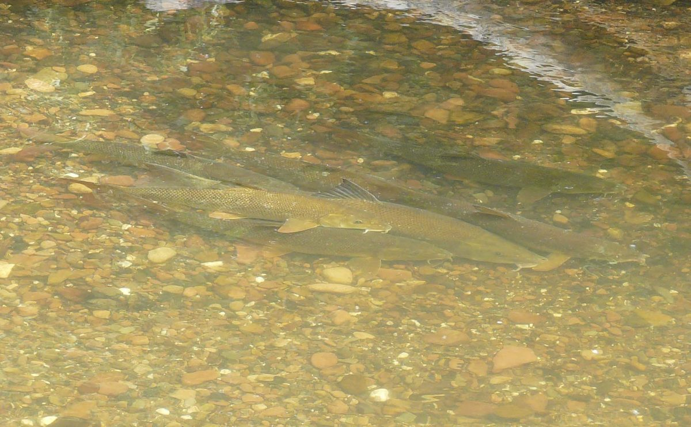

Biologia i rozpoznawanie
Wygląd i rozpoznawanie
Brzana ma wydłużone, wrzecionowate ciało doskonale przystosowane do życia w prądzie — grzbiet zielonkawo-oliwkowy lub brązowawy przechodzi w mosiężno-złociste boki i jaśniejszy, srebrzysty brzuch. Najpewniejszą cechą rozpoznawczą jest dolny, wysuwalny otwór gębowy z mięsistymi wargami oraz cztery wyraźne wąsiki: para na końcu pyska i para w kącikach ust. To narzędzia bytowej ryby dennej, która wyczuwa pokarm w żwirze i pod kamieniami. Płetwa grzbietowa jest krótka, a pierwszy silny promień bywa lekko ząbkowany. Młode osobniki miewają ciemne plamki na grzbiecie, które z wiekiem zanikają. Brzana bywa mylona z brzanką, znacznie mniejszą krewniaczką z górskich potoków, oraz z certą — od obu odróżnia ją zestaw wąsików, sylwetka i dolne, ryjkowate usta idealne do wybierania bezkręgowców z dna.
Środowisko i występowanie w Polsce
Brzana jest gatunkiem reofilnym w pełnym tego słowa znaczeniu — potrzebuje wartkiego, dobrze natlenionego nurtu i twardego, kamienisto-żwirowego dna. To ona nadała nazwę krainie brzany, środkowemu odcinkowi rzeki między krainą lipienia a krainą leszcza, gdzie prąd jest jeszcze żywy, ale koryto już szersze i głębsze. W Polsce spotkamy ją w dorzeczach Wisły i Odry: w Sanie, Dunajcu, Wiśloce, Nidzie, Bugu, Warcie, Nysie Kłodzkiej czy w samej Odrze i Wiśle na odcinkach o odpowiednim charakterze. Trzyma się bystrzy, przewężeń, granic prądu i cienia mostów, unikając zamulonych, wolno płynących zbiorników. Jest wskaźnikiem czystości wody — jako ryba wrażliwa na deficyt tlenu i zanieczyszczenia znika tam, gdzie rzeka zostaje zdegradowana, przegrodzona lub ogrzana. Jej obecność to sygnał, że dany odcinek zachował dobry stan ekologiczny.
Biologia i tarło
Brzana dojrzewa późno — samce zwykle w trzecim lub czwartym roku życia, samice jeszcze później — i może żyć kilkanaście lat, osiągając solidne rozmiary liczone w kilogramach. Tarło odbywa wiosną i wczesnym latem, orientacyjnie od maja do czerwca, gdy woda ogrzeje się do kilkunastu stopni. Ryby podejmują wtedy charakterystyczne wędrówki tarłowe w górę rzeki, szukając płytkich, silnie przepływających bystrzy o żwirowo-kamienistym dnie. Samica składa ikrę na kamieniach, w szczeliny i między żwir, gdzie prąd dobrze ją natlenia. To zachowanie litofilne czyni brzanę wyjątkowo wrażliwą na zabudowę hydrotechniczną: jazy, progi i tamy odcinają tarliska i przerywają migracje, przez co lokalne populacje zanikają. Zamulenie dna, pobór żwiru i regulacja koryta niszczą podłoże niezbędne do rozrodu, dlatego ochrona swobodnie płynących odcinków rzek jest dla tego gatunku kluczowa.
Żerowanie w sezonach
Brzana żeruje głównie przy dnie, wybierając wargami larwy owadów, kiełże, ślimaki, skorupiaki, drobne mięczaki, a przy okazji szczątki roślinne i detrytus. Największą aktywność notuje się od późnej wiosny do wczesnej jesieni, gdy woda jest ciepła, a metabolizm ryby wysoki — to złoty okres brzaniarza. W upalne dni często bierze o świcie i po zmroku, chętnie też po ciepłym, letnim deszczu, który podnosi i lekko zabarwia wodę, wypłukując z brzegów pokarm. Latem stada krążą po żerowiskach na granicach prądu i w dołach za bystrzami. Wraz z ochłodzeniem jesienią brzana schodzi w głębsze, spokojniejsze zimowiska i mocno ogranicza żerowanie; zimą jej aktywność jest minimalna. Wczesną wiosną, przed tarłem, bywa nieufna, dlatego najlepsze połowy przypadają na okno od czerwca do września, gdy ryby żerują pewnie i walczą wyjątkowo zaciekle.
Przepisy, metody i taktyka
Przepisy krajowe i zasady lokalne
Przepisy krajowe: Wody śródlądowe: wymiar 40 cm; okres ochronny 1 stycznia–30 czerwca. Źródło: Dz.U. 2023 poz. 1373, § 6–7
Granica okresu ochronnego: jeżeli pierwszy lub ostatni dzień okresu przypada w dzień ustawowo wolny od pracy, okres skraca się o ten dzień (§ 7 ust. 2); wyjątkiem jest całoroczna ochrona jesiotra.
Przed połowem: sprawdź aktualny regulamin i zezwolenie dla konkretnej wody. Wymiar, okres, limit lub zakaz lokalny może być ostrzejszy; brak wartości krajowej nie oznacza zgody na zabranie ryby.
Metody i przynęty
Klasyką brzaniarstwa jest łowienie przy dnie w nurcie — feeder i grunt to metody numer jeden. Feeder pozwala precyzyjnie podać przynętę na żerowisku i jednocześnie donęcać koszyczkiem, co ma ogromne znaczenie przy rybie stadnej i przywiązanej do ścieżek żerowych. Sprawdza się też tradycyjny grunt z odpowiednio dobranym ciężarkiem trzymającym zestaw w prądzie oraz dłuższa wędka do łowienia „na czuja" w silnym nurcie. Wśród przynęt króluje rosówka i pęczek dendroben, znakomicie pracują też kukurydza, ziarna konopi, ser, kiełbasa, pelety i ciasta. Do nęcenia stosuje się zanęty gruntowe wzbogacone ziarnem, konopiami i kawałkami rosówek, dociążone tak, by trzymały się dna mimo prądu. Ze względu na siłę brzany zestaw musi być mocny: solidny kołowrotek, plecionka lub gruby fluorocarbon oraz haki dobrej jakości. Spinning bywa skuteczny sporadycznie, ale to metody denne dają nad rzeką najwięcej brań.
Taktyka łowienia
Sukces w łowieniu brzany zaczyna się od czytania rzeki. Szukaj granic prądu, przewężeń, dołów za bystrzami, cienia mostów i miejsc, gdzie żwirowe dno przechodzi w większe kamienie — tam stada żerują najchętniej. Kluczem jest cierpliwe, systematyczne donęcanie jednego łowiska: brzana potrafi wejść na zanętę dopiero po dłuższym czasie, za to gdy stado się zbierze, brania idą seriami. Ciężar zestawu dobierz tak, by przynęta leżała stabilnie na dnie, a jednocześnie subtelnie reagowała na branie — feeder z czułą szczytówką idealnie to godzi. Bierze pewnie, ale pierwszy bieg w prąd jest gwałtowny, dlatego luz hamulca ustaw z wyczuciem i nie forsuj holu. Najlepszy czas to ciepłe miesiące, świt, zmierzch oraz okres po letnim deszczu podnoszącym wodę. Poruszaj się cicho — w przejrzystej rzece brzana jest czujna i płoszy się hałasem na brzegu.
Wartość kulinarna
Mięso brzany jest białe, delikatne i smaczne, choć mocno ością — to typowa ryba dla cierpliwego kucharza, którą warto naciąć w gęstą kratkę przed smażeniem, by drobne ości zmiękły. Uwaga najważniejsza i bezwzględnie kulinarna: ikra brzany jest trująca dla człowieka. Jej spożycie może wywołać ostre dolegliwości żołądkowo-jelitowe określane dawniej mianem „barbowej cholery" — nudności, wymioty, biegunkę i osłabienie. Dlatego jeśli już zabierasz brzanę do kuchni, bezwzględnie usuń całą ikrę i nigdy jej nie spożywaj ani nie podawaj zwierzętom. Pozostałe wnętrzności usuń podczas patroszenia jako standardową praktykę higieniczną. Samo mięso po dokładnym oczyszczeniu jest bezpieczne i cenione, ale coraz więcej wędkarzy traktuje ten gatunek wyłącznie sportowo, wypuszczając ryby z powrotem. Jeśli decydujesz się na konsumpcję, wybieraj mniejsze osobniki spoza okresu tarła i pochodzące z czystej, dobrze natlenionej rzeki.
Ciekawostki
Brzana to ryba, która nadała nazwę całej strefie rzecznej — kraina brzany opisuje środkowy bieg rzek o żywym prądzie i kamienistym dnie, między krainą lipienia a krainą leszcza. Jej łacińska nazwa Barbus barbus podkreśla najbardziej charakterystyczną cechę, czyli wąsiki, po łacinie barba oznacza brodę. To ryba wybitnie wędrowna: przed tarłem pokonuje znaczne dystanse w górę rzeki, dlatego drożność koryta i przepławki przy jazach mają dla niej ogromne znaczenie. Wśród wędkarzy uchodzi za jednego z najsilniejszych przeciwników słodkowodnych — jej bieg w prąd potrafi zaskoczić nawet doświadczonego brzaniarza. Trująca ikra sprawiła, że przez wieki obrosła w ludowe przestrogi. Jako gatunek wrażliwy na jakość wody bywa traktowana jako naturalny bioindykator: tam, gdzie żeruje zdrowe stado brzan, rzeka zachowała dobrą kondycję ekologiczną.
FAQ — najczęstsze pytania
Kiedy bierze brzana?
Brzana bierze najlepiej w ciepłej połowie sezonu, orientacyjnie od czerwca do września, gdy woda jest nagrzana, a ryby żerują pewnie przy dnie. Najbardziej owocne są świt i zmierzch oraz okres po letnim deszczu, który podnosi i lekko barwi wodę, wypłukując pokarm z brzegów. W upały aktywność przenosi się na noc i wczesny poranek. Wiosną, przed tarłem, brzana bywa nieufna, a zimą jej aktywność spada niemal do zera, gdy ryby schodzą w głębsze zimowiska. Kluczem jest łowienie w nurcie i cierpliwe donęcanie żerowiska — gdy stado wejdzie na zanętę, brania często idą seriami.
Czy ikra brzany jest trująca?
Tak — to najważniejsza przestroga dotycząca tego gatunku. Ikra brzany zawiera substancje toksyczne dla człowieka i może wywołać ostre dolegliwości żołądkowo-jelitowe: nudności, wymioty, biegunkę i osłabienie, opisywane dawniej jako „barbowa cholera". Samo mięso jest bezpieczne i smaczne, ale przed przyrządzeniem trzeba bezwzględnie usunąć całą ikrę i nigdy jej nie spożywać ani nie podawać zwierzętom. Pozostałe wnętrzności usuń podczas patroszenia jako standardową praktykę higieniczną. Jeśli masz jakiekolwiek wątpliwości co do świeżości lub prawidłowego oczyszczenia ryby, bezpieczniej zrezygnować z konsumpcji. Wielu wędkarzy z tego właśnie powodu traktuje brzanę wyłącznie sportowo i wypuszcza złowione okazy.
Gdzie szukać brzany w rzece?
Brzana to ryba nurtu, więc szukaj jej tam, gdzie prąd jest żywy, a dno twarde — kamieniste lub żwirowe. Najlepsze łowiska to granice prądu, przewężenia koryta, doły i uspokojenia wody za bystrzami, cień mostów oraz miejsca, gdzie żwir przechodzi w większe kamienie. Unika wód zamulonych, ciepłych i wolno płynących. Trzyma się środkowych odcinków rzek nizinnych i podgórskich, czyli klasycznej krainy brzany, gdzie stada krążą po utartych ścieżkach żerowych. Warto obserwować rzekę i łowić systematycznie w jednym, dobrze donęconym miejscu, bo brzana chętnie wraca na sprawdzone żerowisko, zwłaszcza po podniesieniu się wody po deszczu.
Na co najlepiej łowić brzanę?
Najskuteczniejsze są metody denne w nurcie — feeder i grunt — pozwalające precyzyjnie podać przynętę na żerowisku i jednocześnie donęcać. Wśród przynęt niezawodne są rosówka i pęczek dendroben, dobrze pracują też kukurydza, konopie, ser, kiełbasa, pelety i ciasta. Do nęcenia stosuj zanęty gruntowe z ziarnem, konopiami i kawałkami rosówek, dociążone tak, by trzymały dno mimo prądu. Ze względu na ogromną siłę brzany zestaw musi być mocny: solidny kołowrotek, wytrzymała plecionka lub gruby fluorocarbon oraz dobrej jakości haki. Hamulec ustaw z wyczuciem, bo pierwszy bieg ryby w prąd jest gwałtowny i potrafi zaskoczyć nawet doświadczonego wędkarza.
Źródła i weryfikacja
Materiał ma charakter przeglądowy i edukacyjny. Wymiary, okresy ochronne i limity podano orientacyjnie wg ogólnych zasad PZW; okręgi stosują własne, surowsze regulacje — przed połowem zweryfikuj aktualne zezwolenie, regulamin właściwego okręgu PZW oraz komunikaty na pzw.org.pl.
Tożsamość biologiczna i źródła
Nazwa łacińska: Barbus barbus. Grupa atlasu: spokojny żer. Alias: barbel.
Źródła: FishBase: Barbus barbusGBIF: Barbus barbusIUCN Red List: Barbus barbus. Dostęp: 2026-07-14. Zakres: tożsamość taksonomiczna i nazewnictwo; bez potwierdzenia lokalnego występowania, stanu łowiska ani zasad połowu.
Jak odróżnić: Brzana i Świnka
| Cecha | Brzana | Świnka |
|---|---|---|
| Okolica pyska | Dwie pary wąsików i gruba dolna warga z poduszeczką. | Bez wąsików; dolna warga tworzy twardą, rogową krawędź. |
| Płetwy | Barwa nie jest cechą rozstrzygającą. | Płetwy piersiowe, brzuszne, odbytowa i ogonowa mogą być czerwone. |
Źródła cech: FishBase: Barbus barbus · FishBase: Chondrostoma nasus. Dostęp: 2026-07-14.
Granica oznaczenia: Wąsiki są mocniejszą cechą niż kolor, który zależy od środowiska i kondycji ryby. Liczenie promieni lub łusek wymaga ostrego obrazu i praktyki; cechy barwy i proporcji zależą od wieku, płci, populacji i ubarwienia godowego.
Ograniczenie interpretacji: Nie traktuj wzmianki o ikrze jako porady kulinarnej: nie spożywaj jej bez wiarygodnej identyfikacji i informacji bezpieczeństwa.